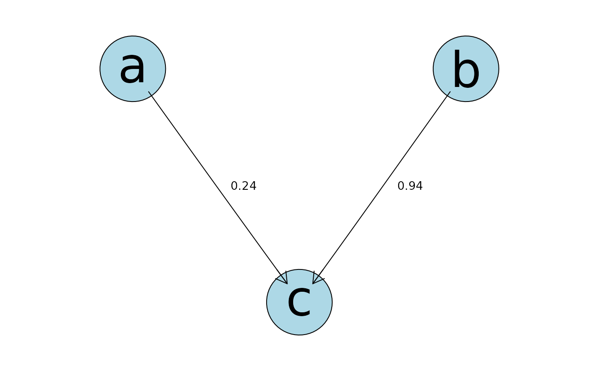

Build a cache of goodness of fit metrics for each node in a DAG, possibly subject to user-defined restrictions
Source:R/build_score_cache.R, R/build_score_cache_bayes.R, R/build_score_cache_mle.R
buildScoreCache.RdIterates over all valid parent combinations - subject to ban, retain, and max.parent limits - for each node, or a subset of nodes, and computes a cache of scores (AIC, BIC, log marginal likelihood).
This cache can then be used in different DAG structural search algorithms.
Usage
buildScoreCache(data.df = NULL,
data.dists = NULL,
method = "bayes",
group.var = NULL,
adj.vars = NULL,
cor.vars = NULL,
dag.banned = NULL,
dag.retained = NULL,
max.parents = NULL,
which.nodes = NULL,
defn.res = NULL,
centre = TRUE,
dry.run = FALSE,
control = NULL,
verbose = FALSE,
debugging = FALSE,
...)
buildScoreCache.bayes(
data.df = NULL,
data.dists = NULL,
group.var = NULL,
cor.vars = NULL,
dag.banned = NULL,
dag.retained = NULL,
max.parents = NULL,
which.nodes = NULL,
defn.res = NULL,
dry.run = FALSE,
centre = TRUE,
force.method = NULL,
mylist = NULL,
grouped.vars = NULL,
group.ids = NULL,
control = build.control(method = "bayes"),
verbose = FALSE,
debugging = FALSE
)
forLoopContentBayes(
row.no = NULL,
children = NULL,
node.defn = NULL,
dag.m = NULL,
force.method = NULL,
data.df = NULL,
data.dists = NULL,
var.types = NULL,
control = NULL,
grouped.vars = NULL,
group.ids = NULL,
verbose = FALSE
)
forLoopContent(
row.num,
mycache,
data.dists,
data.df.multi,
adj.vars,
data.df,
data.df.lvl,
group.var,
group.ids,
control,
n,
verbose
)
buildScoreCache.mle(
data.df = NULL,
data.dists = NULL,
max.parents = NULL,
adj.vars = NULL,
cor.vars = NULL,
dag.banned = NULL,
dag.retained = NULL,
which.nodes = NULL,
centre = TRUE,
defn.res = NULL,
dry.run = FALSE,
verbose = FALSE,
debugging = FALSE,
force.method = NULL,
group.var = NULL,
grouped.vars = NULL,
group.ids = NULL,
control = build.control(method = "mle")
)Arguments
- data.df
a data frame containing the data used for learning each node. Binary variables must be declared as factors.
- data.dists
a named list giving the distribution for each node in the network, see ‘Details’.
- method
should a "Bayes" or "mle" approach be used, see ‘Details’.
- group.var
variable name for nodes to be fitted as variable intercept as in a mixed-effects model ("Bayes" and "mle") and gives the column name in
data.dfof the grouping variable which must be a factor denoting group membership.- adj.vars
a character vector giving the column names in
data.dffor which the network score has to be adjusted for, see ‘Details’.- cor.vars
a character vector giving the column names in
data.dffor which a mixed model should be used to adjust for within group correlation or pure adjustment ("bayes" only).- dag.banned
a matrix or a formula statement (see ‘Details’ for format) defining which arcs are not permitted - banned - see ‘Details’ for format. Note that colnames and rownames must be set, otherwise same row/column names as data.df will be assumed. If set as NULL an empty matrix is assumed.
- dag.retained
a matrix or a formula statement (see ‘Details’ for format) defining which arcs are must be retained in any model search, see ‘Details’ for format. Note that colnames and rownames must be set, otherwise same row/column names as data.df will be assumed. If set as NULL an empty matrix is assumed.
- max.parents
a constant or named list giving the maximum number of parents allowed, the list version allows this to vary per node (only for
method="bayes". A constant can be a single integer, a numeric vector of the length of variables with the same integer for all variable (e.g.c(2,2)) or a named list with all values being the same (e.g.list("A"=2, "B"=2)).- which.nodes
a vector giving the column indices of the variables to be included, if ignored all variables are included. This is used to subset
data.df.- defn.res
an optional user-supplied list of child and parent combinations, see ‘Details’.
- centre
should the observations in each Gaussian node first be standardized to mean zero and standard deviation one, defaults to TRUE.
- dry.run
if TRUE then a list of the child nodes and parent combinations are returned but without estimation of node scores (log marginal likelihoods).
- control
a list of control parameters. See
build.controlfor the names of the settable control values and their effect.- verbose
if TRUE then provides some additional output.
- debugging
if
TRUEandmethod = 'mle'this enables to step into the for-loop.- ...
additional arguments passed for optimization.
- force.method
"notset", "INLA" or "C". This is specified in
buildScoreCache(control=list(max.mode.error=...)).- mylist
result returned from
check.valid.data.- grouped.vars
result returned from
check.valid.groups.- group.ids
result returned from
check.valid.groups.- row.no
The row number of the child-parent combination to be processed.
- children
vector of child node integers.
- node.defn
child-parent combination table.
- dag.m
Empty adjacency matrix.
- var.types
vector of numeric encoding of distribution types. See
get.var.types(data.dists)- row.num
number of child-node (mostly corresponds to child node index e.g. in dag).
- mycache
prepared cache.
- data.df.multi
extended data.df for one-hot-encoded multinomial variables.
- data.df.lvl
copy of original
data.df.- n
corresponds to
nvars, number of variables in data.dists.
Value
A named list of class abnCache.
childrena vector of the child node indexes (from 1) corresponding to the columns in data.df (ignoring any grouping variable)
node.defna matrix giving the parent combination
mliklog marginal likelihood value for each node combination. If the model cannot be fitted then NA is returned.
error.codeif non-zero then either the root finding algorithm (glm nodes) or the maximisation algorithm (glmm nodes) terminated in an unusual way suggesting a possible unreliable result, or else the finite difference hessian estimation produced and error or warning (glmm nodes). NULL if
method="mle".error.code.desca textual description of the
error.code. NULL ifmethod="mle"hessian.accuracyAn estimate of the error in the final mlik value for each parent combination - this is the absolute difference between two different adaptive finite difference rules where each computes the mlik value. NULL if
method="mle"data.dfa version of the original data (for internal use only in other functions such as
mostProbable).data.diststhe named list of nodes distributions (for internal use only in other functions such as
mostProbable).max.parentsthe maximum number of parents (for internal use only in other functions such as
mostProbable).dag.retainedthe matrix encoding the retained arcs (for internal use only in other functions such as
searchHeuristic).dag.bannedthe matrix encoding the banned arcs (for internal use only in other functions such as
searchHeuristic).aicaic value for each node combination. If the model cannot be fitted then NaN is returned. NULL if
method="bayes".bicbic value for each node combination. If the model cannot be fitted then NaN is returned. NULL if
method="bayes".mdlmdl value for each node combination. If the model cannot be fitted then NaN is returned. NULL if
method="bayes".
Named vector of results from one child-parent combination subject to the row.no.
The names are:
- childParentCombNo
The row number of the child-parent combination in the
node.defntable. This must be the same as the row number innode.defn: careful ifbuildScoreCache.bayes()is run in parallel!- mlik
The marginal log-likelihood of the child-parent combination.
- error.code
The error code returned by
inla().- hessian.accuracy
The accuracy of the Hessian matrix returned by
inla().- used.INLA
A logical value indicating whether
inla()was used to fit the model.
list
Details
The function computes a cache of scores based on possible restrictions (maximum complexity, retained and banned arcs).
This function is very similar to fitAbn - see that help page for details of the type of models used and in particular data.dists specification - but rather than fit a single complete DAG buildScoreCache iterates over all different parent combinations for each node, creating a cache of scores.
This cache of score could be used to select the optimal network in other function such as searchHeuristic or mostProbable.
‘dag.banned’ and ‘dag.retained’ specify which arcs are forced to be absent or present in the DAG, respectively.
If provided as matrix, rows represent child nodes and columns their parents for elements with a value $=1$.
Two very different approaches are implemented: a Bayesian and frequentist approaches. They can be selected using the method argument.
If method="bayes":
This function is used to calculate all individual node scores (log marginal likelihoods).
Internal code is used by default for numerical estimation in nodes without random effects, and INLA is the default for nodes with random effects.
This default behavior can be overridden using control=list(max.mode.error=...). The default is max.mode.error=10, which means that the modes estimated from INLA output must be within 10\
Otherwise, the internal code is used rather than INLA.
To force the use of INLA on all nodes, use max.mode.error=100, which then ignores this check, to force the use of internal code then use max.mode.error=0. For more detials, see fitAbn.
The variable which.nodes is to allow the computation to be separated by node, for example, over different CPUs using say R CMD BATCH.
This may useful and indeed likely essential with larger problems or those with random effects.
Note that in this case, the results must then be combined back into a list of identical formats to that produced by an individual call to buildScoreCache,
comprising of all nodes (in the same order as the columns in data.df) before sending it to any search routines. Using dry.run can be useful here.
If method="mle":
This function is used to calculate all individual information-theoretic node scores. The possible information-theoretic based network scores computed in buildScoreCache are the maximum likelihood (mlik, called marginal likelihood in this context as it is computed node wise),
the Akaike Information Criteria (aic), the Bayesian Information Criteria (bic) and the Minimum distance Length (mdl). The classical definitions of those metrics are given in Kratzer and Furrer (2018). This function computes a cache that can be fed into a model search algorithm.
The numerical routines used here are identical to those in fitAbn and see that help page for further details and also the quality assurance section on the r-bayesian-networks.org of the abn website for more details.
Functions
buildScoreCache.bayes(): Fit a given DAG to data with method="bayes".forLoopContentBayes(): Internal function called bybuildScoreCache.bayes().forLoopContent(): Internal function called bybuildScoreCache.mle().buildScoreCache.mle(): Fit a given DAG to data with method="mle".
References
Kratzer, Gilles, Fraser Lewis, Arianna Comin, Marta Pittavino, and Reinhard Furrer. “Additive Bayesian Network Modeling with the R Package Abn.” Journal of Statistical Software 105 (January 28, 2023): 1–41. https://doi.org/10.18637/jss.v105.i08.
Kratzer, G., Lewis, F.I., Comin, A., Pittavino, M., and Furrer, R. (2019). "Additive Bayesian Network Modelling with the R Package abn". arXiv:1911.09006.
Kratzer, G., and Furrer, R., (2018). "Information-Theoretic Scoring Rules to Learn Additive Bayesian Network Applied to Epidemiology". arXiv:1808.01126.
Lewis, F. I., and McCormick, B. J. J. (2012). "Revealing the complexity of health determinants in resource poor settings". American Journal Of Epidemiology. doi:10.1093/aje/KWS183).
Further information about abn can be found at: r-bayesian-networks.org.
See also
Other buildScoreCache:
build.control()
Other Bayes:
calc.node.inla.glm(),
calc.node.inla.glmm(),
fitAbn(),
getmarginals()
Examples
## Simple example
# Generate data
N <- 1e6
mydists <- list(a="gaussian",
b="gaussian",
c="gaussian")
a <- rnorm(n = N, mean = 0, sd = 1)
b <- 1 + 2*rnorm(n = N, mean = 5, sd = 1)
c <- 2 + 1*a + 2*b + rnorm(n = N, mean = 2, sd = 1)
mydf <- data.frame("a" = scale(a),
"b" = scale(b),
"c" = scale(c))
# ABN with MLE
mycache.mle <- buildScoreCache(data.df = mydf,
data.dists = mydists,
method = "mle",
max.parents = 2)
#> Loading required package: Matrix
dag.mle <- mostProbable(score.cache = mycache.mle,
max.parents = 2)
#> Step1. completed max alpha_i(S) for all i and S
#> Total sets g(S) to be evaluated over: 8
myfit.mle <- fitAbn(object = dag.mle,
method = "mle",
max.parents = 2)
plot(myfit.mle)

if (FALSE) {
# ABN with Bayes
if(requireNamespace("INLA", quietly = TRUE)){
# Run only if INLA is available
mycache.bayes <- buildScoreCache(data.df = mydf,
data.dists = mydists,
method = "bayes",
max.parents = 2)
dag.bayes <- mostProbable(score.cache = mycache.bayes,
max.parents = 2)
myfit.bayes <- fitAbn(object = dag.bayes,
method = "bayes",
max.parents = 2)
plot(myfit.bayes)
}
# Compare MLE and Bayes with lm
mymod.lm <- lm(c ~ a + b, data = mydf)
summary(mymod.lm)
##################################################################################################
## Example 1 - "mle" vs. "bayes" and the later with using the internal C routine compared to INLA
##################################################################################################
# Subset of the build-in dataset, see ?ex0.dag.data
mydat <- ex0.dag.data[,c("b1","b2","g1","g2","b3","g3")] ## take a subset of cols
# setup distribution list for each node
mydists <- list(b1="binomial", b2="binomial", g1="gaussian",
g2="gaussian", b3="binomial", g3="gaussian")
# Structural constraints
## ban arc from b2 to b1
## always retain arc from g2 to g1
## parent limits - can be specified for each node separately
max.par <- list("b1"=2, "b2"=2, "g1"=2, "g2"=2, "b3"=2, "g3"=2)
# now build the cache of pre-computed scores accordingly to the structural constraints
res.c <- buildScoreCache(data.df=mydat,
data.dists=mydists,
dag.banned= ~b1|b2,
dag.retained= ~g1|g2,
max.parents=max.par,
method="bayes")
# repeat but using R-INLA. The mlik's should be virtually identical.
# Force using of INLA build.control(max.mode.error=100)
if(requireNamespace("INLA", quietly = TRUE)){
res.inla <- buildScoreCache(data.df=mydat,
data.dists=mydists,
dag.banned= ~b1|b2, # ban arc from b2 to b1
dag.retained= ~g1|g2, # always retain arc from g2 to g1
max.parents=max.par,
method="bayes",
control=build.control(max.mode.error=100))
## comparison - very similar
difference <- res.c$mlik - res.inla$mlik
summary(difference)
}
# Comparison Bayes with MLE (unconstrained):
res.mle <- buildScoreCache(data.df=mydat, data.dists=mydists,
max.parents=3, method="mle")
res.abn <- buildScoreCache(data.df=mydat, data.dists=mydists,
max.parents=3, method="bayes")
# of course different, but same order:
plot(-res.mle$bic, res.abn$mlik)
#################################################################
## Example 2 - mle with several cores
#################################################################
## Many variables, few observations
mydat <- ex0.dag.data
mydists <- as.list(rep(c("binomial", "gaussian", "poisson"), each=10))
names(mydists) <- names(mydat)
system.time({
res.mle1 <- buildScoreCache(data.df=mydat,
data.dists=mydists,
max.parents=2,
method="mle",
control = build.control(method = "mle",
ncores=1))})
system.time({
res.mle2 <- buildScoreCache(data.df=mydat,
data.dists=mydists,
max.parents=2,
method="mle",
control = build.control(method = "mle",
ncores=2))})
#################################################################
## Example 3 - grouped data - random effects example e.g. glmm
#################################################################
## this data comes with abn see ?ex3.dag.data
mydat <- ex3.dag.data[,c("b1","b2","b3","b4","b5","b6","b7",
"b8","b9","b10","b11","b12","b13", "group")]
mydists <- list(b1="binomial", b2="binomial", b3="binomial",
b4="binomial", b5="binomial", b6="binomial", b7="binomial",
b8="binomial", b9="binomial", b10="binomial",b11="binomial",
b12="binomial", b13="binomial" )
max.par <- 2
## in this example INLA is used as default since these are glmm nodes
## when running this at node-parent combination 71 the default accuracy check on the
## INLA modes is exceeded (default is a max. of 10 percent difference from
## modes estimated using internal code) and a message is given that internal code
## will be used in place of INLA's results.
mycache.bayes <- buildScoreCache(data.df=mydat,
data.dists=mydists,
group.var="group",
method = "bayes",
max.parents=max.par)
dag.bayes <- mostProbable(score.cache=mycache.bayes)
plot(dag.bayes)
mycache.mle <- buildScoreCache(data.df=mydat,
data.dists=mydists,
group.var="group",
method = "mle",
max.parents=max.par)
dag.mle <- mostProbable(score.cache=mycache.mle)
plot(dag.mle)
}